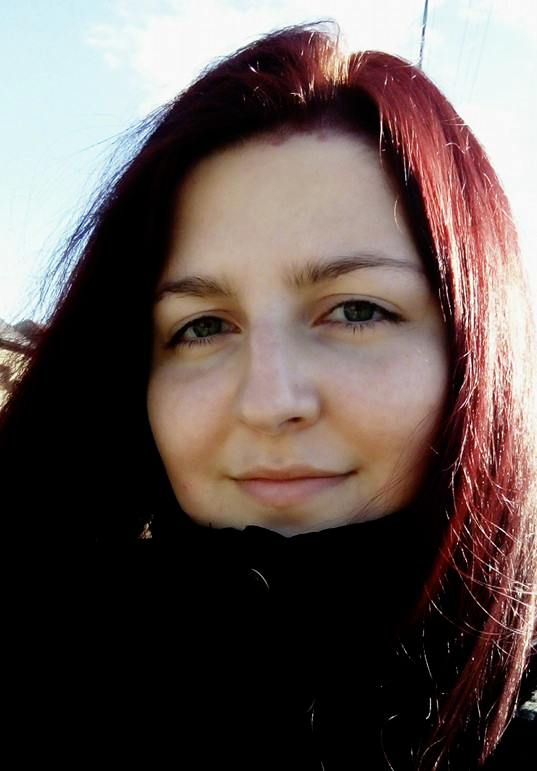

Adéla Kohoutková
Rok narození: 1993
Email: adela.kohoutkova@post.cz
Tel. číslo: +420 603 745 933
Discord: Crateris#6246
GitHub: Craterisia
Bydliště: Markvartovice, okres Opava
Shrnutí
Jsem zkušený zástupce vedoucí směny s dovednostmi v maloobchodním prodeji a s uměleckou stránkou.
Mám bohaté zkušenosti ve
vedení týmu 5 až 10 lidí jako zástupce vedoucího
směny v maloobchodním prostředí, kde jsem uplatňovala své dovednosti v
řízení a organizaci směn, zajištění vysoké úrovně zákaznického
servisu a dosahování obchodních cílů.
Dále jsem se specializovala na digitální a tradiční malbu na zakázku
pro soukromé osoby, kde jsem projevila
kreativitu a schopnost splnit očekávání zázazníka.
Své zájmy zaměřuji na neustále učení a zdokonalování, ať už jde o získávání nových dovedností nebo zlepšování těch již osvojených.
Vzdělání
| Období | Instituce | Obor | Zakončení |
|---|---|---|---|
| 2023 | ENGETO s. r. o. | Front-end Developer Akademie | Certifikát |
| 2019 | SVOPAP s. r. o. | Chovatel zvířat se zaměřením na péči v zooprodejnách a zájmových chovech | Certifikát |
| 2008 - 2012 | Střední umělecká škola Ostrava | Tvarování průmyslových výrobků - průmyslový design | Maturita |
Pracovní zkušenosti
| Období | Instituce | Pozice |
|---|---|---|
| 15. 5. 2021 - současnost | Profesní pauza | rodičovská dovolená |
| 1. 10. 2016 - 14. 5. 2021 | Lidl Česká republika v. o. s. | Prodavačka-pokladní, zástupce vedoucí směny |
| 1. 9. 2016 - 30. 9. 2016 | Weppler Group s. r. o. Ostrava | Operátor výroby |
| 14. 5. 2015 - 30. 6. 2016 | Mirror Pub, Ostrava | Obsluha baru |
| 1. 5. 2015 - 31. 5. 2015 | Kaufland Česká republika v. o. s. | Obsluha pultu s lahůdkami, uzeninami a sýry |
| 2013 - 2016 | Ridera Skalka s. r. o., Ostrava; ZŠ J. Valčíka, Ostrava; Active Relax, Ostrava; ZŠ Vřesina, Vřesina; JPK Avalanche, Dolní Moravice | Instruktor lyžování |
Dovednosti
- Jazykové dovednosti: Anglický jazyk na komunikační úrovni (C1)
- Organizační schopnosti: Schopnost plánovat a řídit směny, koordinovat úkoly a sledovat jejich splnění
- Komunikační dovednosti: Schopnost efektivně komunikovat s různými zainteresovanými stranami, včetně týmu, zákazníků a vedoucích
- Flexibilita a adaptabilita: Schopnost rychle se přizpůsobit a reagovat na změny v prostředí a požadavky zákazníků
- Kreativní dovednbosti: Zkušenost s prací v grafických editorech Adobe Photoshop a Illustrator, Krita.
- Další dovednosti: Řidičský průkaz sk. B (30 000 km ročně, osobní i dodávkový automobil)
Zájmy
- Chov papoušků a sov
- Malba a kresba digitálními i tradičními technikami
- Racecarwing (kurz instruktora lyžování)
- Produktový design
- Výpomoc na mediálním projektu ORKworks - grafické práce, marketing